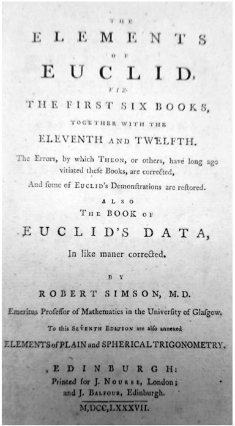
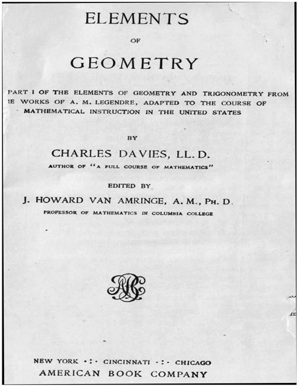
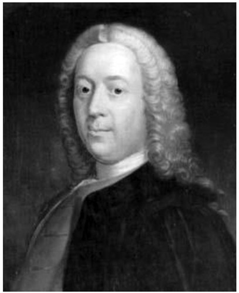
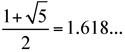
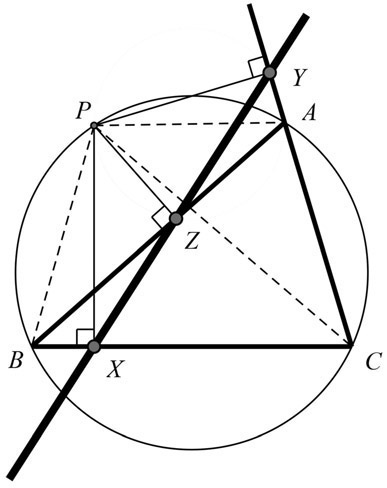
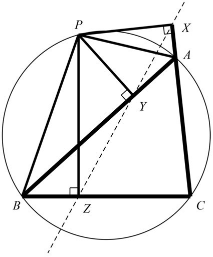
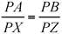
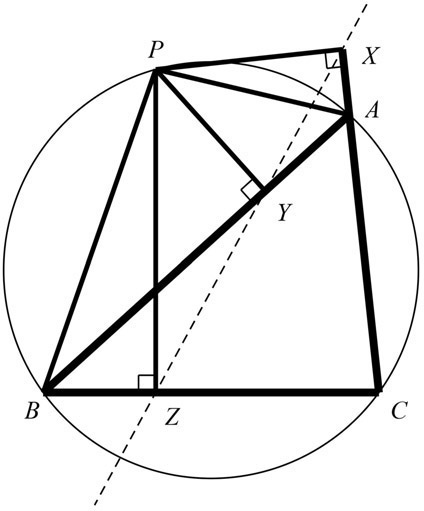
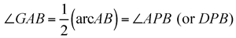

Robert Simson: Scottish (1687–1768)
The United States education system is one of the few in the world where students study one year of geometry while still in high school. Naturally, the curriculum for this course is ultimately based on the famous work by Euclid, Elements. Yet the path the high-school geometry curriculum took is rather interesting. We could begin with the Scottish mathematician Robert Simson, who set out to prepare a perfect text, in English, of Euclid’s first six books together with the eleventh and twelfth books, and first published it as a complete book in Glasgow, Scotland, in 1756. We show the title page of the 1787 edition in figure 20.1.
In 1794, the French mathematician Adrien-Marie Legendre (1752–1833) published a geometry book titled Éléments de géométrie, which remained popular for about one hundred years. This book made its way across the Atlantic Ocean through the work of the American mathematician Charles Davies, whose adaptation, Elements of Geometry was first published in 1828. This title then became the model for teaching geometry in the United States (see fig. 20.2). Naturally, there have been many modifications over the years until we get to today’s American high-school geometry course.1
That this path began with Robert Simson is only one aspect of this important mathematician’s biography. The eldest son of John Simson, he was born on October 14, 1687, in West Kilbride, Ayrshire, Scotland.

Figure 20.1.
His brilliance in classics and botany enabled him to enter the University of Glasgow at the age of fourteen, in 1702. At the urging of his father, Simson was being guided to prepare for a life in the church; however, he found the religious thinking unsatisfying, because of its speculation and lack of precision. A book on Asian philology was his next attraction, but there, even though statements could be shown to be either true or false, he was not totally satisfied. It was not until he delved into mathematics that he found a subject of particular interest. In particular, it was geometry that was his great awakening, specifically when he read Euclid’s Elements. Unfortunately, the challenges in the field of mathematics in Glasgow were not sufficient, so he decided to go to London upon completion of his studies at the University of Glasgow in 1710, despite having been offered the chair of mathematics at the University of Glasgow. In London, he met the leading mathematicians of his time, and a year later he returned to Glasgow to assume the position that he had been originally offered. There, he once again pursued his favorite aspect of mathematics: geometry. After writing about Euclid’s work in Latin, he eventually published what was probably the first English version of this monumental work by Euclid. As we mentioned earlier, Simson’s book, which had more than seventy editions throughout the world, still remains as the primary model for studying Euclid’s Elements through today’s American high-school geometry course. Throughout his career, Simson was aware of developments in algebra and infinitesimal calculus, but he usually preferred to present his mathematical ideas in terms of geometry.

Figure 20.2.
Robert Simson never married and lived a very simple lifestyle, giving up a more elegant home for a small, modest apartment, and he ate most of his meals at a small pub near the university. In 1746, he was given an honorary doctorate of medicine by St Andrews University in Scotland. He carried this degree with pride, as you can see in the title page shown in figure 20.1.

Figure 20.3. Eighteenth-century portrait of Robert Simson.
In 1753, Simson provided another aspect to our growing history of mathematics when he indicated that the ratio between adjacent Fibonacci numbers approaches the golden ratio as a limit, namely,

... .However, his fame today beyond the historic achievement with his geometry book is a geometric theorem that bears his name, yet one that should not be attributed to him, since it was discovered by the Scottish mathematician William Wallace (1768–1843), who published it in 1799, in Thomas Leybourn’s The Mathematical Repository. It is believed that because of Simson’s popularity, geometric ideas that were not attributed to René Descartes and were written in the Euclidean style were automatically attributed to Robert Simson.
Let’s take a look at this famous Simson’s theorem. In figure 20.4, we notice that triangle ABC is inscribed in a circle, and point P is any point on the circle. From point P, three perpendiculars are drawn to the three sides of the triangle (thin, solid lines). The feet of the perpendiculars are noted as the points X, Y, and Z. According to Simson’s theorem (or should we have said “Wallace’s theorem”?), these three points, X, Y, and Z, will always be collinear.

Figure 20.4.
Justifying why this amazing relationship actually holds true is a fine exercise in understanding the power of geometric relationships. We begin by referring to figure 20.4, where we notice that angle PYA is supplementary to angle PZA (since both are right angles). We recall that when the opposite angles of a quadrilateral are supplementary, the quadrilateral is cyclic (i.e., inscribable in a circle). Therefore, quadrilateral PZAY is cyclic. We now draw PA, PB, and PC (dashed lines). Considering the circumscribed circle about quadrilateral PZAY (not shown), we have two angles ∠PYZ = ∠PAZ = ∠PAB, intercepting the same arc, namely, the arc PZ of the circle, which makes these two angles (∠PAZ = ∠PAB) equal.
In a similar way, we notice the two right angles, ∠PYC and ∠PXC, are supplementary, and this establishes that we have a cyclic quadrilateral PXCY. Therefore, as before ∠PYX = ∠PCB, since they are both measured by the arc PX.
Now from the cyclic quadrilateral PACB we have ∠PAZ (or ∠PAB) = ∠PCB. From the three angle equalities that we have just established, we can tie them together and obtain ∠PYX = ∠PCB = ∠PAZ = ∠PYZ, or, simply written, we have ∠PYX = ∠PYZ, which then implies the points X, Y, and Z are collinear. Thus, we have proved Simson’s theorem. It should be noted that the converse of this is also true.

Figure 20.5.
Besides collinearity, the lengths of the perpendiculars also form a relationship that merits noting. In figure 20.5, point P is on the circumcircle of triangle ABC, where perpendiculars PX, PY, and PZ are drawn to sides AC, AB, and BC, respectively. The interesting relationship that evolves is that PA·PZ =PB·PX. In order to justify this surprising relationship, we will identify two cyclic quadrilaterals, namely, quadrilateral PYZB and quadrilateral PXAY. The quadrilateral PYZB is cyclic because ∠PYB and ∠PZB, which are right angles, are both subtended by the side PB, and we should know that when a side of a quadrilateral subtends equal angles at two opposite vertices, then the quadrilateral is cyclic. Therefore, ∠PBY = ∠PZY. We can make a similar argument for the quadrilateral PXAY to be cyclic, since ∠PXA = ∠PYA = 90°. Once again, we can conclude that ∠PXY = ∠PAY. Since we have the points X, Y, and Z along the Simson line, we can establish that ΔPAB ~ ΔPXZ. It then follows that

, which then gives us PA · PZ = PB · PX. This is what we set out to show in the first place.In figure 20.6, we will show another interesting feature about the Simson line—applying it to triangle ABC. This curious relationship shows that if the altitude AD of triangle ABC meets the circumscribed circle at point P, then the Simson line (XDZ) of point P with respect to triangle ABC is parallel to the tangent, AG, to the circle at point A.
In order to show that this relationship is true, we begin by considering that the line segments PX and PZ are perpendicular, respectively, to sides AC and AB of triangle ABC. As shown in figure 20.6, we now draw the segment PB. Focusing on quadrilateral PDBZ, we notice that ∠PDB = ∠PZB = 90°, thereby allowing us to establish it as a cyclic quadrilateral. This then enables us to establish that ∠DZB = ∠DPB, since they both have a measure one-half of arc DB.
When we consider the circumcircle of triangle ABC, we notice two angles of equal measure, because each has a measure one half of arc AB; that is,

Figure 20.6.

or simply put, ∠GAB = ∠DPB. This, then, allows us to establish that ∠DZB = ∠GAB, which are alternate-interior angles of the two parallel lines, AG and XDZ, formed by the transversal ABZ. Therefore, the Simson line is parallel to the tangent at point A. Even though it is believed today that Simson was not responsible for developing this theorem and its various relationships, since both it and the line bear his name, it is presented here to give a complete picture of why Robert Simson is still known very well today.
Robert Simson died in 1768, and he is buried in Blackfriars burial ground, where, sometime later, a fifty-foot monument was erected in his honor at the West Kilbride cemetery. It bears the following inscription: “The Restorer of Grecian Geometry, and by his Works the Great Promoter of its Study in the Schools.”2 This certainly summarizes his contributions for the future!